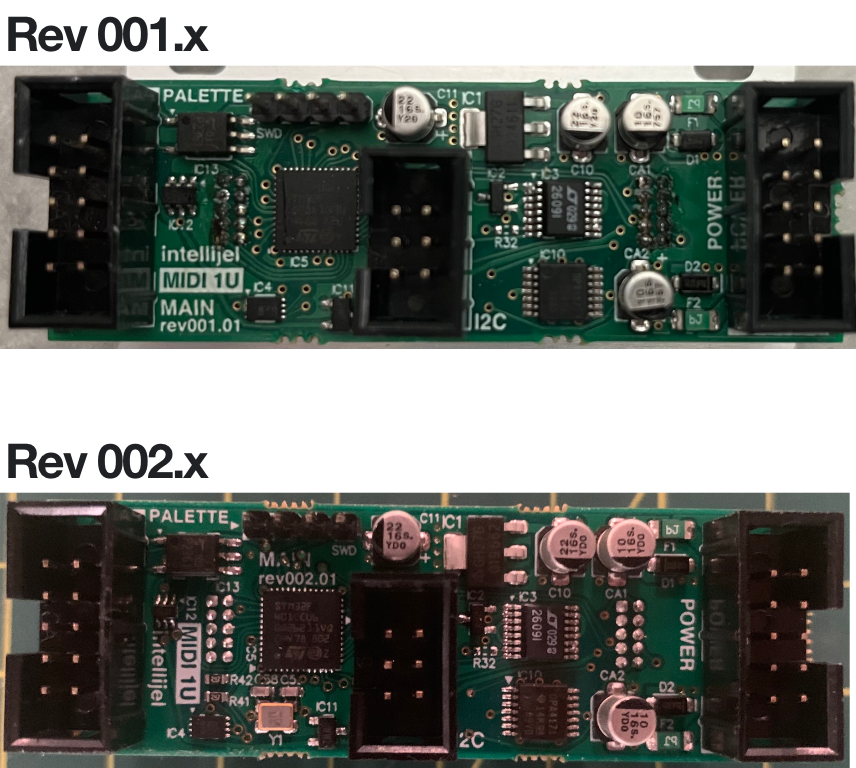

MIDI 1U (rev002)
Note: Check the back of your module under the MAIN label for the module revision number.

- Entering Bootloader
- Update Instructions
- Changelog
- Turn off power to your modular system.
- Disconnect all cables, including patch cables and DIN MIDI cables from the MIDI 1U.
- Connect a USB cable from the MIDI 1U module to your computer.
- Hold down the LEARN button on the module and turn on power to your modular system.
- From the version menu above, select the firmware version you will be updating to.
- Click the Update button in the bottom of this window. You will see the progress of the update in the
log window and your module may begin to flash. You will see an “Update completed successfully” message at
the end of the update.
- Turn your modular off and back on again, you're now ready to use your updated module.
- If there are any problems please contact us via the Help button on our website. Be sure to include the full
log window output, the firmware updater version downloaded, and the OS you are using.
1.2.9.0 (2025-02-24)
- TWEAK: USB Product ID Updated.
1.2.7.0 / 1.2.8.0 (2024-10-01)
Note: On Rev002 units, 1.2.7.0 is the same as 1.2.8.0, version number was bumped for consitency.
- Extended the range of Pitch Bench to 48 Semitones.
- Config App (1.6.2.0 or higher required) available at intellijel.com/support.
1.2.6.0 (2023-10-05)
- Extended the assignable CCs available to the full range, 0-127.
- Config App (1.4.3.0 or higher required) available at intellijel.com/support.
1.2.4.0 (2022-11-03)
- The increased rates from 1.2.2 were causing instability with the onboard DAC (module appeared to hang on
boot, intermittently). We've reduced the rate, but it's still double that of pre-1.2.2 versions.
- Fixes Serial MIDI issues with Rev002 units (no issues with Rev001).
1.2.2.0 (2022-09-15)
- Increase communication rates with CVx. Only noticeable when using 2 or more CVx modules.
1.2.0.0 (2021-12-03)
Note: IntellijelConfig.App v1.2 required for advanced configuration. Available at intellijel.com/support.
- New "Gate (Any)" Output Type option for paraphony on Mono Synths.
- Added Portamento support for Mono Synths.
- Added arbitrary clock divisions for Custom Outputs.
- Increased clock divider range for Custom Outputs.
- Misc bug fixes.
1.1.4.0 (2021-10-28)
- Internal/Initial release.